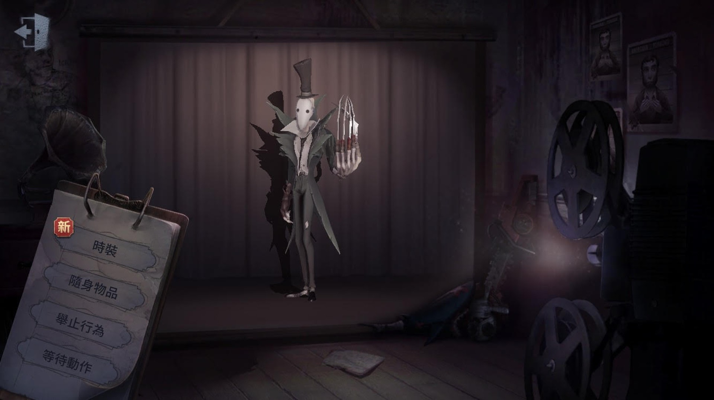
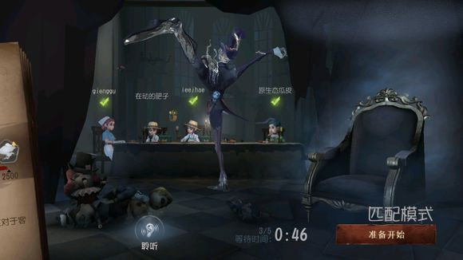

傑克

【人物介紹】
名字：傑克
在獲得"傑克"這個稱號之前，他是詹姆斯·惠斯勒的學生，一位受到愛德格·德加影響的知名藝術家。誰能想到一位白日裡衣冠楚楚的紳士會在暗夜裡走入小巷，尾隨著那些無知無覺的可憐婦人呢？隨著"傑克"的名聲越來越大，這兩種身份的界限日益模糊
【能力介紹】
寒霧：寒意入骨，霧氣在傑克的爪刃上聚集為霧刃，霧刃累積到一定程度後，傑克進行攻擊可觸發額外的霧刃同時消耗累積的霧氣，霧刃會在飛行路徑上留下霧區，霧區內傑克移動速度提升、霧隱冷卻時間大幅度縮短，被霧刃命中的求生者移動時也會遺落霧區。
